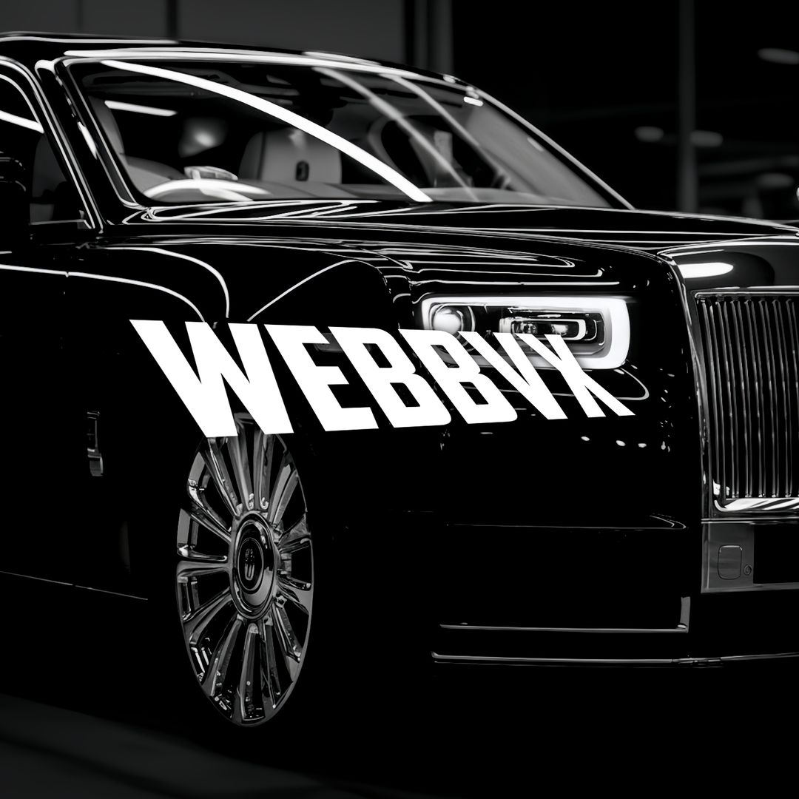
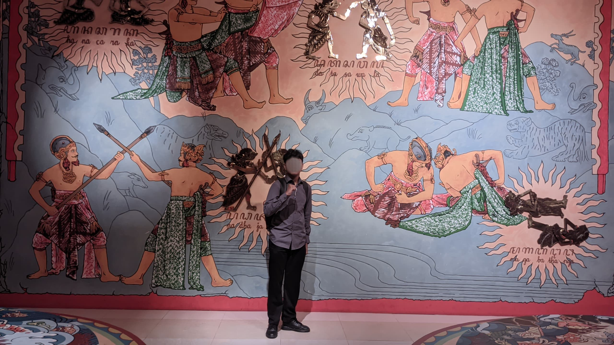

Image Designer · Konten Kreator · Pemimpin Muda

"Dari layar kecil, aku belajar bermimpi besar. Dari ketidaktahuan, aku belajar jadi luar biasa."
Putar musik untuk pengalaman:
Lahir di Banyumas, 25 April 2009, dan besar di sebuah desa kecil bernama Kedungreja, Cilacap. Tempat yang jauh dari keramaian, tapi justru dari sana aku belajar banyak hal—tentang kesederhanaan, tentang syukur, dan tentang arti cukup.
Sebagai anak pertama, aku tumbuh dengan rasa tanggung jawab yang mungkin datang terlalu cepat. Rumah kami tidak besar, hanya aku dan satu adik. Tapi dari situ aku paham bahwa keutuhan keluarga bukan soal jumlah, melainkan seberapa dalam kita saling menjaga dan mendengarkan.
Dunia visual jadi cara alami bagiku untuk memahami banyak hal. Warna, bentuk, komposisi—semua terasa lebih mudah dicerna daripada kata-kata. Dari situ ketertarikanku pada desain tumbuh, bukan cuma sebagai hobi, tapi sebagai cara menyampaikan isi kepala yang kadang sulit dijelaskan lewat ucapan.
Perjalanan ini tidak selalu mulus. Sejak remaja, aku bergumul dengan hal-hal yang tidak bisa dijelaskan dengan logika biasa. Ada suara-suara yang tidak didengar orang lain, kecemasan yang menyerang diam-diam, dan depresi yang kadang muncul di sela senyuman. Semua itu membentuk cara aku berpikir, merasa, dan memahami orang lain.
Tapi aku bukan cerita tentang penderitaan. Aku adalah perjalanan. Dan meskipun jalan ini tidak selalu lurus, aku tetap melangkah—karena bahkan dalam jiwa yang paling retak, masih bisa tumbuh pengertian, keindahan, dan harapan.
SD Negeri Kedungreja 05
Waktu SD aku tidak terlalu tertarik pada lomba menggambar atau mading. Ketertarikanku justru lebih ke dunia digital, khususnya Photoshop.
SMP Muhammadiyah Kedungreja
Mulai serius belajar desain digital secara otodidak lewat berbagai tutorial online dan praktik langsung.
SMA Informatika Muda Kedungreja
Fokus mengembangkan kemampuan desain profesional sambil aktif di berbagai organisasi sekolah.
Universitas Paramadina Cikarang
Mengambil prodi Teknik Informatika dengan visi peluang kerja yang lebih luas.
Berikut adalah kemampuan yang saya kuasai, dibagi berdasarkan tingkat penguasaan.
Bidang yang paling saya kuasai dan tekuni sehari-hari.
Kemampuan yang saya pelajari dan gunakan sebagai penunjang.
Kemampuan interpersonal yang saya kembangkan lewat organisasi.
Perjalanan saya di dunia organisasi dimulai dari titik nol, berkembang lewat proses panjang yang penuh tantangan tapi sangat berharga.
Anggota Pasukan Pengibar Bendera
Pengalaman pertama mengabdi di upacara bendera, belajar disiplin dan kerja tim yang ketat.
Pengibar Bendera Utama
Dipercaya memimpin tim pengibar bendera, bertanggung jawab penuh atas kesuksesan upacara.
Anggota Divisi Kreatif OSIS
Bertugas membuat berbagai materi promosi dan dokumentasi kegiatan OSIS.
Penanggung Jawab Kegiatan Kepramukaan
Memimpin berbagai kegiatan kepramukaan, mengembangkan program yang menekankan nilai gotong royong, loyalitas, dan kepemimpinan.
Wakil Ketua OSIS
Membantu memimpin seluruh kegiatan OSIS, menjadi penghubung antara pengurus dan pembina.
Seksi Kedisiplinan OSIS
Bertanggung jawab menegakkan tata tertib sekolah dan membangun budaya disiplin positif.
Sebagai image designer dan konten kreator, saya sudah menghasilkan berbagai karya untuk kebutuhan organisasi, personal, dan komersial.
Membuat lebih dari 50 desain untuk berbagai kebutuhan OSIS dan sekolah, termasuk:
Mengelola konten untuk beberapa akun media sosial dengan total lebih dari 1.000 followers:
Beberapa proyek desain yang paling menantang dan berkesan:
"Vito bukan hanya mampu bekerja, tapi juga menginspirasi. Ia hadir bukan untuk tampil, tapi untuk menggerakkan. Dalam setiap proyek yang dikerjakannya, selalu ada nilai lebih yang diberikan."
"Sebagai desainer, Vito sangat detail oriented. Dia tidak hanya membuat yang indah, tapi juga memastikan desainnya efektif menyampaikan pesan. Jarang menemukan siswa dengan pemahaman desain yang begitu matang."
"Kepemimpinan Vito berbeda. Dia memimpin dengan memberi contoh, bukan dengan perintah. Cara dia membimbing junior-juniornya patut diacungi jempol."
Menjadi profesional kreatif yang tidak hanya menghasilkan karya estetis, tapi juga bermakna dan memberikan dampak positif bagi masyarakat.